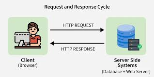

Request-Response Cycle
The request-response cycle is how browsers and servers communicate on the Web.
| Step | Actor | Action |
|---|---|---|
| 1 | Browser | Sends HTTP request |
| 2 | Server | Processes request |
| 3 | Server | Sends HTTP response |
| 4 | Browser | Displays content |
Key idea: Ask and answer — that's the Web in action.

Step-by-Step: What Happens When You Visit a Website
- You type
https://www.example.cominto your browser and press Enter. - Your browser performs a DNS lookup to resolve the domain name to an IP address.
- The browser establishes a TCP connection to the server (via the Three-Way Handshake).
- If using HTTPS, a TLS handshake occurs to set up an encrypted channel.
- The browser sends an HTTP Request to the server.
- The server processes the request and sends back an HTTP Response.
- The browser receives the response and renders the HTML, CSS, and JavaScript.
- Additional requests are made for embedded resources (images, fonts, scripts).
Structure of an HTTP Request
Request Line
Method + URL + HTTP version. Example: GET /index.html HTTP/1.1
Request Headers
Metadata about the request: Host, Accept, Content-Type, User-Agent, Authorization, Cookie.
Request Body
Optional. Contains data sent to the server — present in POST/PUT/PATCH requests (e.g., form data, JSON).
Example
Host: www.example.com
User-Agent: Mozilla/5.0
Accept: text/html
Structure of an HTTP Response
Status Line
HTTP version + status code + reason. Example: HTTP/1.1 200 OK
Response Headers
Metadata: Content-Type, Content-Length, Set-Cookie, Cache-Control, Server.
Response Body
The actual content: HTML page, JSON data, image binary, file download, etc.
Key Status Codes
200 OK, 201 Created, 301 Redirect, 404 Not Found, 500 Server Error.
Key Characteristics
Properties of HTTP Communication
- Stateless — each request is independent; the server does not remember previous requests
- Client-Initiated — the server never pushes data unless requested (in classic HTTP)
- Synchronous (traditionally) — the client waits for the response before proceeding
- WebSockets — a modern upgrade allowing full-duplex communication (server can push to client)
- AJAX — allows pages to send/receive data in the background without full page reloads